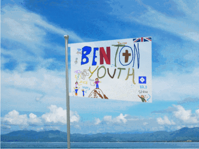

Capital: Youth Room
Population: ~40 (2025) ~50 (2026)
GDP: $4.00 (September, 2025)
GDP Per Capita: $0.10 (2025)
Taxes: $0.05 Per Month
President: Jakob the Homeless ManVice President: Jakob 2.0
National Animal: JakobNational Food: Pizza
National Drink: Coca Cola
National Mascot: JenniferCrime Rate: 69,000/100,000
Youth Room (Capital)
The Gym
The Flaglands
The Pool Rooms (Backrooms)
Fortnite
The Sub-Basement
The Basement
The Lobby (Backrooms)
Minecraft
These are guesses. If you have more accurate figures, please DON'T contact us. Stop calling me idiots.
(no update till 2027)
Grade 6s (Born in 2014): ~11
Grade 7s (Born in 2013): ~2
Grade 8s (Born in 2012): ~5
Grade 9s (Born in 2011): ~7
Grade 10s (Born in 2010): ~10
Grade 11s (Born in 2009): ~8
Grade 12s (Born in 2008): ~2
British (English, Scottish, Welsh, and Irish): ~20
Unknown: ~11
French: ~7
German: ~14
Eritreans: ~10
Boys: ~25
Girls: ~25
Christanity: 35
Atheism: 10
Jenniferism: 5
LEGACY DEMOGRPAHICS
Grade 6s (Born in 2014): ~10
Grade 7s (Born in 2013): ~2
Grade 8s (Born in 2012): ~4
Grade 9s (Born in 2011): ~7
Grade 10s (Born in 2010): ~10
Grade 11s (Born in 2009): ~5
Grade 12s (Born in 2008): ~2
British (English, Scottish, Welsh, and Irish): ~20
Unknown: ~11
French: ~5
German: ~4
Boys: ~20
Girls: ~20
Christanity: 35
Atheism: 5
Jenniferism: 1